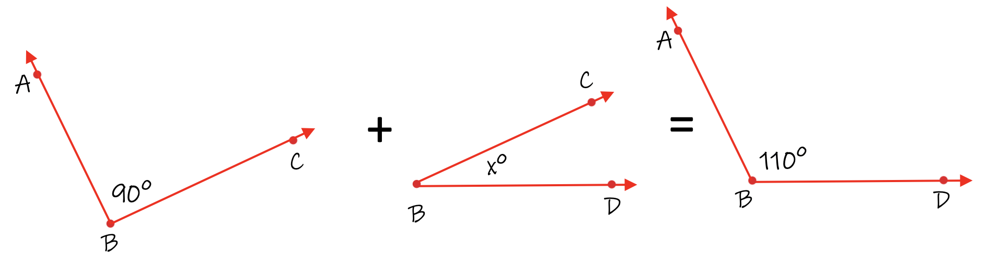

The Angle Addition Postulate is used to combine one or more angles together to form a new third angle. The Angle Addition Postulate tells us how to calculate the degrees of the third angle.
Let's review the types of angles before we start.
Example 1:
Calculate the degrees of angle ABC.
In the diagram above, angle ABD is combined with angle DBC to produce a new angle, ABC. To calculate the degrees of angle ABC, add the two angles degrees together.
Solution:
The measure of angle ABC is 70°.
Example 2:
Calculate the degrees of angle ABC.
Add the two angle degrees together to get the value of angle ABC.
Angle ABC is 150°.
Example 3:
Calculate the degrees of angle ABC.
To calculate the degrees of angle ABC, add the two angles' degrees together.
Angle ABC is 180°.
Rule:
To calculate the degrees of an angle formed by two smaller angles, add their degrees together to get the degrees of the new angle formed.
Example 4:
Calculate the degrees of angle DBC.
Solution:
This problem is different from the previous examples because we know the degrees of one of the small angles but not the other. We also know the two angles add to equal 75°.
In order to calculate the missing angle, we need to calculate 40° + x° = 75°. Forty plus some number equals 75°. Subtract 40° from 75° to get the answer. 75° - 40° = 35°. The measure of angle DBC is 35°. To check your answer, add the two smaller angles to see if it equals the largest angle. In this case: 40° + 35° = 75°.
Our answer is angle DBC = 35°.
Example 5:
Calculate the degrees of angle CBD.
Solution:
We know the degrees of one of the small angles but not the other. We also know the two angles add to equal 110°. Ninety plus some number is 110°. Subtract 90° from 110° and the answer is 20°.
Angle CBD = 20°.

To check your answer, add 90° + 20° to make sure they equal 110°, which they do.
Rule:
To solve for one of the two smaller angles, subtract the smaller angle from the bigger angle. This will give you the other missing angle's degree.